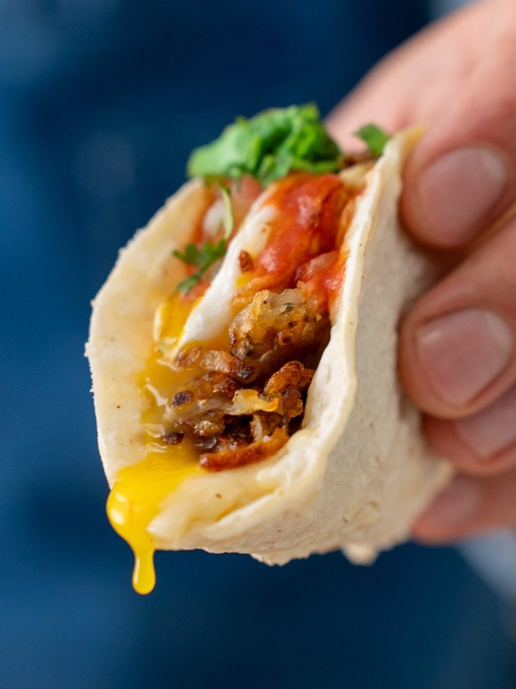

Breakfast Tacos

Ingredients (makes 4 tacos):
- 1 medium russet potato (about 200g)
- Olive oil
- Salt
- Black pepper
- 100g Chihuahua cheese, shredded
- 4 Corn tortillas
- 4 Eggs
- Pico de gallo
- Hot Sauce
- Fresh cilantro, chopped
Instructions:
- Peel and grate the russer potato using the largest holes of a box
grater then squeeze out as much potato juice as possible.
- In a 12” non-stick or seasoned cast iron pan over med-high, heat
olive oil and add grated potatoes.
- Season with a strong pinch of salt and black pepper, spreading
potatoes out and pressing down with a spatula to ensure even browning.
Cook for about 8-10 minutes until crispy and golden brown, flipping
and breaking up the potatoes halfway through.
- While hash browns are cooking, grate the cheese.
- When hash browns are browned, scoot them to the side of the pan,
add a bit of oil to the exposed half of the pan and add eggs (4
total or 1 per taco). Salt lightly. You’re cooking quickly so eggs
will take on color and get a bit crispy on the bottom. The potatoes
will continue to cook in the pan.
- While eggs cook, in another pan over low heat, warm the tortillas.
Flip tortilla over in pan once heated, then add a few pinches of the
grated chihuahua cheese to the top side. Add a lid to the pan to help
the cheese melt.
- When eggs have set on the bottom, flip to the second side for another
minute or 2 until yolk is just barely set, but still runny in the middle.
- Assemble the taco by placing the melty cheesed tortilla on a plate,
adding about ¼ of the hash browns, a fried egg, pico de gallo, hot
sauce, and chopped cilantro.